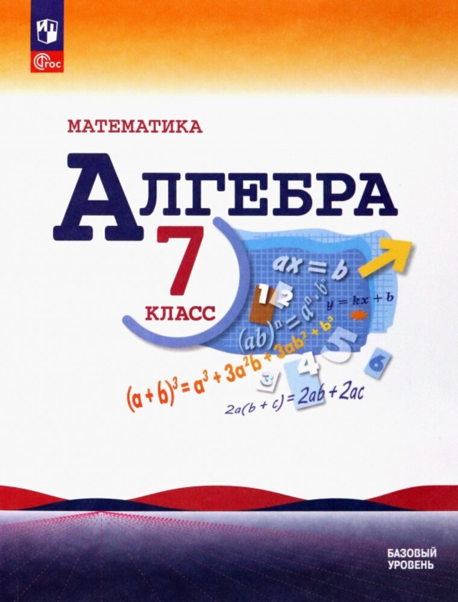

7 класс
›
Алгебра
›
Видеоуроки
Алгебра. 7 класс

Алгебра. 7 класс
Макарычев Ю. Н., Миндюк Н. Г., Нешков К. И. · Просвещение, 2026
С какого параграфа начнём?
Плейлисты
По параграфам
Разбор домашних заданий
Повторение за год
Ещё по курсу
Тренажёры и тесты
Проверить себя по темам
Контрольные работы
11 работ, 4 варианта, с ответами
ВПР и сборники
Варианты 2022 – 2026, PDF
Листайте вбок